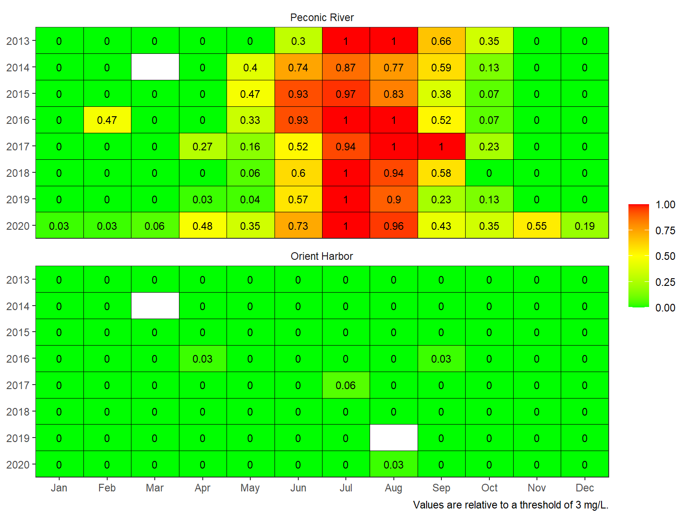
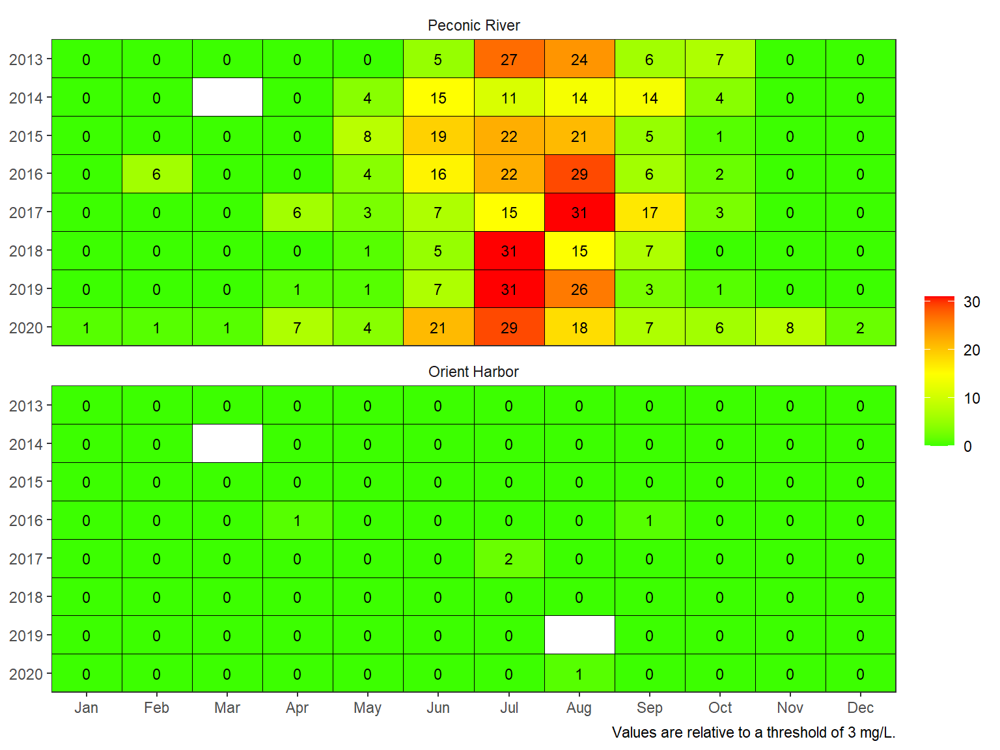
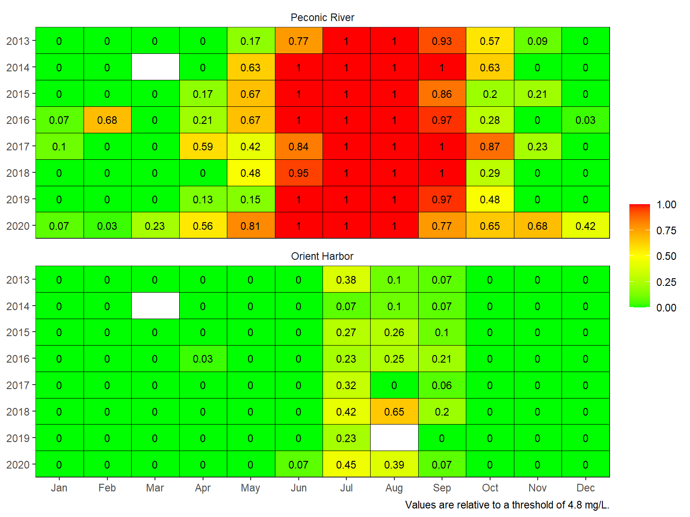

Get the lesson R script: do.R
This module will provide you with background on how to use the peptools R package to import, summarize, and plot dissolved oxygen data. You should be able to answer these questions at the end of this session:
Two continuous USGS monitoring stations collect DO data at locations in the Peconic Estuary: USGS stations 01304562 in the Peconic River and 01304200 in Orient Harbor. Data at these stations can be downloaded using the read_pepdo() function.
exdat <- read_pepdo(site = c('01304562', '01304200'), nms = c('Peconic R.', 'Orient Harbor'), startDate = '2020-06-01', endDate = '2020-06-30')The dodat data object included with the package provides DO data from 2013 to 2020 at the two sites. This takes several minutes to download using the read_pepdo() function, so it is included with the package for ease of use.
head(dodat)## site DateTime do_mgl
## 1 Orient Harbor 2013-01-01 00:00:00 11.2
## 2 Orient Harbor 2013-01-01 00:06:00 11.2
## 3 Orient Harbor 2013-01-01 00:12:00 11.2
## 4 Orient Harbor 2013-01-01 00:18:00 11.2
## 5 Orient Harbor 2013-01-01 00:24:00 11.2
## 6 Orient Harbor 2013-01-01 00:30:00 11.2Dissolved oxygen data typically show daily and seasonal variation. Summaries of condition should account for variation at both temporal scales. Further, the impact of low dissolved oxygen concentrations on biota can vary depending on both magnitude and duration of hypoxia/anoxia. As such, condition assessment could also consider how often concentrations fall below a thresholds and for how long. The assessments below speak to each of these needs.
First, the data can be summarized from the continuous (~6 minute observations) to daily averages using the anlz_dodlpep() function. A user-specified threshold can be supplied to the thr argument to summarize the data relative to a value of interest, the default value being the acute threshold of 3 mg/L (an alternative may be the chronic threshold of 4.8 mg/L, USEPA 2000).
# 3 mg/l is acute, 4.8 mg/l is chronic
dlysum <- anlz_dodlypep(dodat, thr = 3)
dlysum## # A tibble: 5,338 x 7
## site Date yr mo do_mgl below below_cumsum
## <fct> <date> <dbl> <dbl> <dbl> <dbl> <dbl>
## 1 Peconic River 2013-01-01 2013 1 11.0 0 0
## 2 Peconic River 2013-01-02 2013 1 11.3 0 0
## 3 Peconic River 2013-01-03 2013 1 11.6 0 0
## 4 Peconic River 2013-01-04 2013 1 11.6 0 0
## 5 Peconic River 2013-01-05 2013 1 11.7 0 0
## 6 Peconic River 2013-01-06 2013 1 11.8 0 0
## 7 Peconic River 2013-01-07 2013 1 12.0 0 0
## 8 Peconic River 2013-01-08 2013 1 12.1 0 0
## 9 Peconic River 2013-01-09 2013 1 12.0 0 0
## 10 Peconic River 2013-01-10 2013 1 11.7 0 0
## # ... with 5,328 more rowsThe last three columns show the daily summarized data. The do_mgl column shows the average DO concentration for each day, the below column shows a 1 (yes) or 0 (no) if the concentration was below the threshold value at any point during a day, and the below_cumsum column shows a cumulative tally of the number of days in each month at which dissolved oxygen fell below the threshold at any point during a day.
The data can also be summarized by month using the anlz_domopep() function. Summarizing by month distills the information into a simple format for plotting. Internally, the anlz_domopep() function uses the anlz_dodlypep() function to first summarize results by day, which are then summarized by month.
mosum <- anlz_domopep(dodat, thr = 3)
mosum## # A tibble: 189 x 6
## site yr mo do_mgl below_ave below_maxrun
## * <fct> <dbl> <ord> <dbl> <dbl> <dbl>
## 1 Peconic River 2013 Jan 11.6 0 0
## 2 Peconic River 2013 Feb 11.9 0 0
## 3 Peconic River 2013 Mar 11.7 0 0
## 4 Peconic River 2013 Apr 9.55 0 0
## 5 Peconic River 2013 May 7.90 0 0
## 6 Peconic River 2013 Jun 5.73 0.3 5
## 7 Peconic River 2013 Jul 3.12 1 27
## 8 Peconic River 2013 Aug 3.13 1 24
## 9 Peconic River 2013 Sep 4.81 0.655 6
## 10 Peconic River 2013 Oct 6.03 0.348 7
## # ... with 179 more rowsThe last three columns show the monthly summarized data, where do_mgl is the average of all daily DO averages across the month, below_ave is the proportion of days in a month when concentrations in a given day fell below the threshold (1 would mean all days had an instance of DO below the threshold, 0 would mean none), and below_maxrun() is the maximum number of sequential days in a month when concentrations in a given day fell below the threshold (30 or 31, depending on month, would indicate all days in a month had an instance of DO below the threshold).
The below_ave and below_maxrun columns summarize the DO data differently depending on how hypoxia/anoxia conditions can be described relative to potential impacts on biological resources. The below_ave column summarizes undersaturation relative to only the number of times hypoxia conditions occurred, whereas the below_maxrun column summarizes undersaturation relative to both the number of instances and duration of hypoxia. In other words, biota may be stressed differently depending on the number of times hypoxia occurs vs how long it may persist. The two measures may indicate similar information, but not always depending on characteristics of the DO time series.
The summarized monthly data can be plotted with the show_domatrix() function. In this example, the default plot shows the proportion of days in a month when concentrations in a given day fell below a threshold of 3 mg/L.
show_domatrix(dodat, thr = 3, show = 'below_ave')
The maximum number of sequential days in a month when concentrations in a given day fell below the threshold can also be plotted by changing the show argument.
show_domatrix(dodat, thr = 3, show = 'below_maxrun')
The threshold can also be changed. For example, the chronic threshold of 4.8 mg/L shows conditions relative to a more conservative threshold.
show_domatrix(dodat, thr = 4.8, show = 'below_ave')
Plotting the results provides insights into hypoxia patterns at the site depending on how under-saturated conditions were summarized. Additional considerations may include: